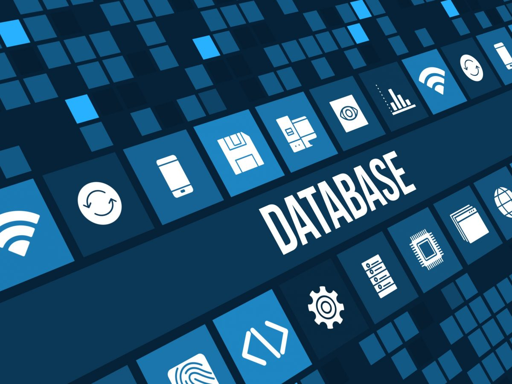
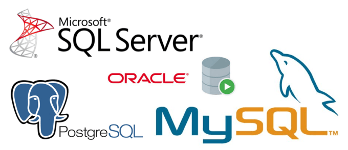
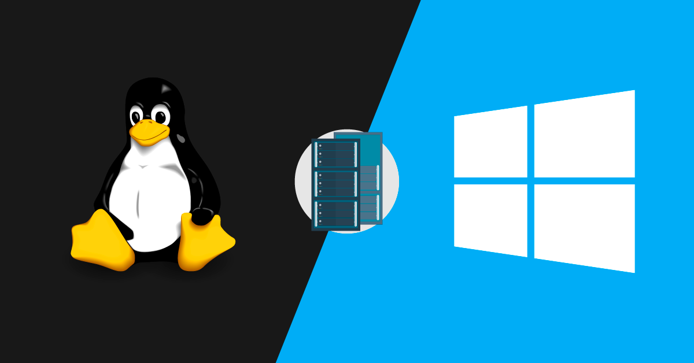

A T.I. Evolutions desenvolve softwares e aplicações específicas para as necessidades do seu negócio.
Nosso diferencial é desenhar soluções customizadas, de acordo com os requisitos do sistema e com a realidade de sua empresa.
Como resultado, oferecemos uma experiência única em desenvolvimento de software. Nossos profissionais acompanham todas as etapas do processo, desde o levantamento das necessidades à implantação final, passando por testes, acompanhamento e treinamento. Contamos com casos de sucesso e experiência acumulada em projetos para empresas de diversos portes e segmentos de mercado.
Nosso principal objetivo é oferecer aos nossos clientes diferencial competitivo e apoio estratégico para evolução de seu negócio, preservando o investimento já feito em tecnologia e maximizando os investimentos futuros.
Dessa forma, utilizando uma abordagem voltada a desenvolvimento de sistemas, estamos plenamente capacitados a atuar nos seguintes segmentos.
- Especificação de infraestrutura de equipamentos e rede;
- Proposta de utilização de novas tecnologias;
- Manutenção de tecnologia existente;
- Revitalização de sistemas;
- Integração entre sistemas.
Seja qual for a sua necessidade, estamos prontos para atendê-la.
Nossos profissionais são especialistas nas seguintes tecnologias:

Modelo multidimensional é uma técnica de modelagem conceitual de negócios, que facilita a investigação, o resumo e a organização de dados para a análise de negócios. Formado por relações entre dimensões e fatos. O modelo multidimensional relaciona tabelas de fatos com tabelas de dimensões em um banco de dados do tipo OLAP, possibilitando inúmeras combinações.Sua modelagem é realizada de forma a ganhar performance nas consultas, possuindo regras diferentes das relacionais em sua modelagem. O modelo multidimensional visa somente consultas analíticas.
Multidimensional
Modelo multidimensional é uma técnica de modelagem conceitual de negócios, que facilita a investigação, o resumo e a organização de dados para a análise de negócios. Formado por relações entre dimensões e fatos. O modelo multidimensional relaciona tabelas de fatos com tabelas de dimensões em um banco de dados do tipo OLAP, possibilitando inúmeras combinações.Sua modelagem é realizada de forma a ganhar performance nas consultas, possuindo regras diferentes das relacionais em sua modelagem. O modelo multidimensional visa somente consultas analíticas.
Banco de dados
A Modelagem de Dados é um instrumento de grande importância, na formatação
de estruturas capazes de serem implantadas e compreendidas pelos Sistemas
Gerenciadores de Banco de Dados. Constitui a camada fundamental de processos
operacionais das empresas. Com a crescente evolução e competitividade em
buscar diferentes áreas de negócios e consequentemente tomada de decisões, as
informações e estruturas são diferenciadas. Desta forma é necessário adotar outra
estrutura de Modelagem de Dados. A proposta do trabalho foi pesquisar e
compreender os fundamentos conceituais de Banco de Dados Multidimensional
que utiliza os procedimentos e comportamentos de tal Modelo, de maneira que
possa exportar para ferramentas de consultas, como o Microsoft Office Excel.

Um banco de dados é uma aplicação que lhe permite armazenar e obter de volta dados com eficiência. O que o torna relacional é a maneira como os dados são armazenados e organizados no banco de dados.
Quando falamos em banco de dados, aqui, nos referimos a um banco de dados relacional — RDBMS Relational Database Management System.
Em um banco de dados relacional, todos os dados são guardados em tabelas. Estas têm uma estrutura que se repete a cada linha, como você pode observar em uma planilha. São os relacionamentos entre as tabelas que as tornam “relacionais”.
Banco de dados Relacional
Um banco de dados é uma aplicação que lhe permite armazenar e obter de volta dados com eficiência. O que o torna relacional é a maneira como os dados são armazenados e organizados no banco de dados.
Quando falamos em banco de dados, aqui, nos referimos a um banco de dados relacional — RDBMS Relational Database Management System.
Em um banco de dados relacional, todos os dados são guardados em tabelas. Estas têm uma estrutura que se repete a cada linha, como você pode observar em uma planilha. São os relacionamentos entre as tabelas que as tornam “relacionais”.
SQL
SQL: Linguagem de Consulta Estruturada, uma linguagem usada na programação e projetada para gerenciar dados mantidos em um sistema de gerenciamento de banco de dados relacional (RDBMS) ou para processamento de fluxo em um sistema de gerenciamento de fluxo de dados relacional (RDSMS).
MySQL
O MySQL é o banco de dados de código aberto mais conhecido no mundo. Com comprovado desempenho, confiabilidade e facilidade de uso, o MySQL tornou-se a principal opção de banco de dados para aplicativos baseados na Web, usado por propriedades da Web de alto perfil, incluindo Facebook, Twitter, YouTube e todos os cinco sites principais.* Além disso, é uma opção extremamente popular como banco de dados integrado, distribuído por milhares de ISVs e OEMs
PostgreSQL
PostgreSQL (ou Postgres): Outro sistema de gerenciamento de banco de dados relacional de código aberto. Não é tão popular quanto o MySQL, já que saiu muito depois do MySQL. Em geral, ele tem algumas vantagens em termos de recursos, mas é mais complexo de configurar, comparado ao MySQL.

Um sistema operacional é uma coleção de programas para gerenciar as funções do processador, o input, o output, o armazenamento e o controle dos dispositivos. O sistema operacional tem todos os comandos básicos que os aplicativos vão usar, em vez de ter todas estas funções re-escritas para cada aplicativo.
Sistemas operacionais
Um sistema operacional é uma coleção de programas para gerenciar as funções do processador, o input, o output, o armazenamento e o controle dos dispositivos. O sistema operacional tem todos os comandos básicos que os aplicativos vão usar, em vez de ter todas estas funções re-escritas para cada aplicativo.
Windows
Microsoft Windows (ou simplesmente Windows) é uma família de sistemas operacionais desenvolvidos, comercializados e vendidos pela Microsoft. É constituída por várias famílias de sistemas operacionais, cada qual atendendo a um determinado setor da indústria da computação, sendo que o sistema geralmente é associado com a arquitetura IBM PC compatível. As famílias ativas do Windows incluem Windows NT, Windows Embedded e Windows Phone; estes podem abranger subfamílias, como Windows CE ou Windows Server.
Linux
O Linux, da mesma forma que o Windows (Microsoft) e o Mac OS (Apple), é um sistema operacional baseado em Unix criado para desktops, mas que também é usado em servidores, smartphones, tablets e outros tipos de dispositivos, incluindo caixas bancários. Ao contrário de seus concorrentes mais famosos, o Linux não foi desenvolvido para fins comerciais e seu software e desenvolvimento são feitos em código aberto, o que significa que qualquer pessoa pode criar e distribuir aplicativos para ele.
Uma linguagem de programação é um método padronizado para comunicar instruções para um computador. É um conjunto de regras sintáticas e semânticas usadas para definir um programa de computador. Permite que um programador especifique precisamente sobre quais dados um computador vai atuar, como estes dados serão armazenados ou transmitidos e quais ações devem ser tomadas sob várias circunstâncias. Linguagens de programação podem ser usadas para expressar algoritmos com precisão.
Linguagens de programação
Uma linguagem de programação é um método padronizado para comunicar instruções para um computador. É um conjunto de regras sintáticas e semânticas usadas para definir um programa de computador. Permite que um programador especifique precisamente sobre quais dados um computador vai atuar, como estes dados serão armazenados ou transmitidos e quais ações devem ser tomadas sob várias circunstâncias. Linguagens de programação podem ser usadas para expressar algoritmos com precisão.
.Net
O .NET Framework é um ambiente de execução gerenciado para Windows que oferece uma variedade de serviços aos aplicativos em execução. Ele consiste em dois componentes principais: o CLR (Common Language Runtime), o mecanismo de execução que manipula aplicativos em execução, e a biblioteca de classes .NET Framework, que oferece uma biblioteca de códigos testados e reutilizáveis que os desenvolvedores podem chamar de seus próprios aplicativos. Entre os serviços que o .NET Framework fornece aos aplicativos em execução estão os seguintes:
Java
Java é uma linguagem de programação e plataforma computacional lançada pela primeira vez pela Sun Microsystems em 1995. Existem muitas aplicações e sites que não funcionarão, a menos que você tenha o Java instalado, e mais desses são criados todos os dias. O Java é rápido, seguro e confiável. De laptops a datacenters, consoles de games a supercomputadores científicos, telefones celulares à Internet, o Java está em todos os lugares!
C#
C é uma linguagem de programação compilada de propósito geral, estruturada, imperativa, procedural, padronizada por Organização Internacional para Padronização (ISO), criada em 1972 por Dennis Ritchie na empresa AT&T Bell Labs para desenvolvimento do sistema operacional Unix (originalmente escrito em Assembly).
C é uma das linguagens de programação mais populares e existem poucas arquiteturas para as quais não existem compiladores para C. C tem influenciado muitas outras linguagens de programação (por exemplo, a linguagem Java), mais notavelmente C++, que originalmente começou como uma extensão para C.
Desenvolvimento de sistemas é a atividade que tem como finalidade a realização de estudos de processos a fim de encontrar o melhor caminho racional para que a informação possa ser processada. Os analistas de sistemas estudam os diversos sistemas existentes entre hardwares (equipamentos), softwares (programas) e o usuário final.
Os seus comportamentos e aplicações são desenvolvidos a partir de soluções que serão padronizadas e transcritas da forma que o computador possa executar.
Desenvolvimento de Sistemas
Desenvolvimento de sistemas é a atividade que tem como finalidade a realização de estudos de processos a fim de encontrar o melhor caminho racional para que a informação possa ser processada. Os analistas de sistemas estudam os diversos sistemas existentes entre hardwares (equipamentos), softwares (programas) e o usuário final.
Os seus comportamentos e aplicações são desenvolvidos a partir de soluções que serão padronizadas e transcritas da forma que o computador possa executar.
Scrum
Scrum é uma metodologia ágil para gestão e planejamento de projetos de software.
No Scrum, os projetos são dividos em ciclos (tipicamente mensais) chamados de Sprints. O Sprint representa um Time Box dentro do qual um conjunto de atividades deve ser executado. Metodologias ágeis de desenvolvimento de software são iterativas, ou seja, o trabalho é dividido em iterações, que são chamadas de Sprints no caso do Scrum.
As funcionalidades a serem implementadas em um projeto são mantidas em uma lista que é conhecida como Product Backlog. No início de cada Sprint, faz-se um Sprint Planning Meeting, ou seja, uma reunião de planejamento na qual o Product Owner prioriza os itens do Product Backlog e a equipe seleciona as atividades que ela será capaz de implementar durante o Sprint que se inicia. As tarefas alocadas em um Sprint são transferidas do Product Backlog para o Sprint Backlog.
RUP
O RUP, de propriedade da IBM, é um framework de processo da engenharia de software que fornece práticas testadas na indústria de software e gerência de projetos. Por ser um framework de processo, pode ser customizado conforme as necessidades organizacionais e do projeto, dessa forma, pode-se trabalhar um RUP mais “leve e ágil” ou “mais pesado”.
O RUP permite que a equipe do projeto escolha as atividades e os artefatos para serem produzidos, reduzindo assim, o excesso de documentação para torná-lo mais ágil. Outra característica interessante dele é a aplicação do modelo de ciclo de vida iterativo e incremental. Na metodologia iterativa, em cada iteração, parte do software é desenvolvida, sendo os artefatos da nova iteração superior à iteração anterior. O desenvolvimento iterativo e incremental permite aos desenvolvedores o aprendizado em relação ao software, possibilitando assim, a localização de futuros problemas em fases iniciais.